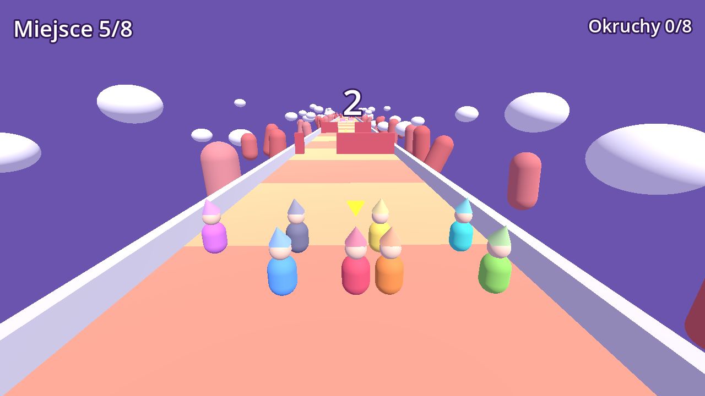
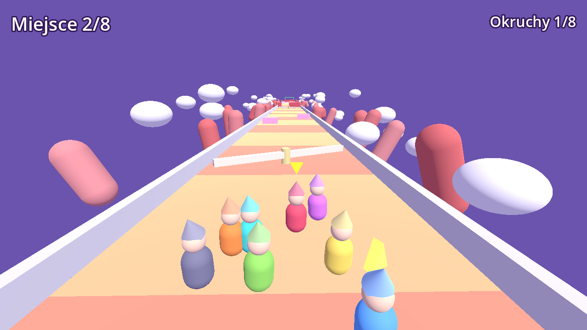
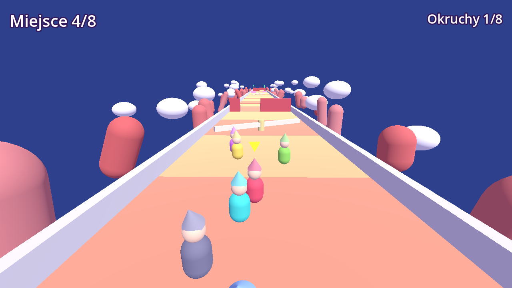
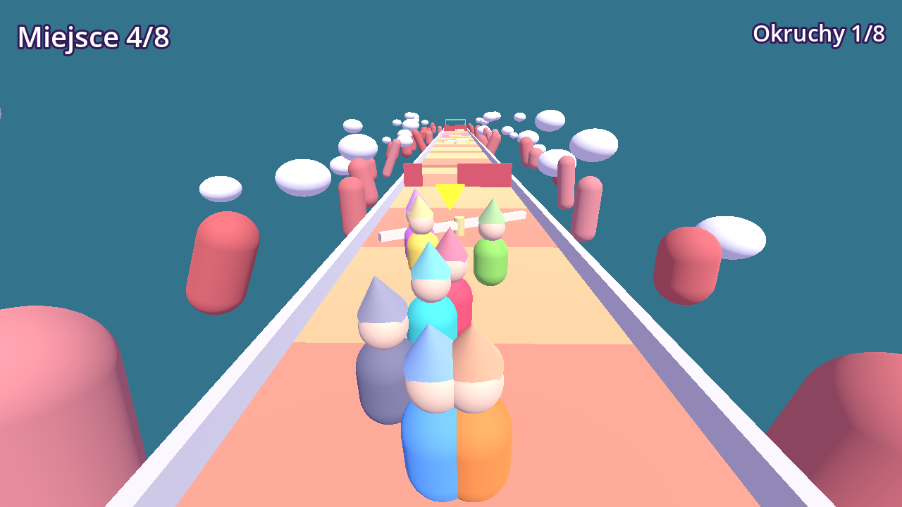

Piżamersi
Najnowsza wersja: 0.1.0 · testy wewnętrzne · 7 listopada 2026
Całe miasteczko śpi, a jego dzieciaki spotykają się w jednym, wspólnym śnie. Kto pierwszy dobiegnie do budzika, ten wygrywa.
W połowie biegu sen „zmienia zdanie”: grawitacja słabnie, podłoga zamienia się w galaretkę, wszyscy rosną albo dostają turbo kapcie.
Gra działa bez internetu, nie zawiera reklam ani losowych skrzynek i nie zbiera żadnych danych.
Gra jest w fazie testów. Link do Google Play pojawi się tutaj w dniu premiery.
Zrzuty ekranu




Co nowego
Wersja 0.1.0 (7 listopada 2026, testy wewnętrzne)
- Pierwsza wersja testowa: jeden sen, wyścig z siedmioma botami.
- Sen zmienia zasady w trakcie biegu: księżycowe skoki, galaretka, olbrzymy, turbo kapcie.
Polityka prywatności gry Piżamersi
Pajama Racers (English)
The whole town is asleep and its kids meet in one shared dream. The first one to reach the alarm clock wins.
Halfway through the race the dream changes its mind: gravity gets weaker, the floor turns to jelly, everyone grows giant or gets turbo slippers.
The game works offline, has no ads or loot boxes, and collects no data.
Latest version: 0.1.0 · internal testing · 2026-11-07
- First test build: one dream, a race against seven bots.
- The dream changes the rules mid-race: moon jumps, jelly floor, giants, turbo slippers.